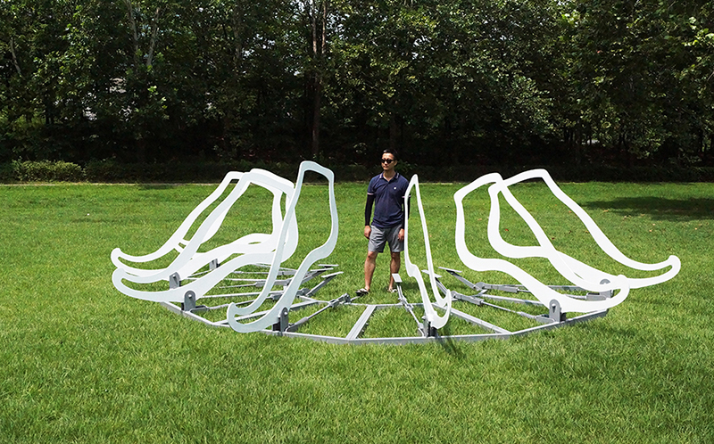
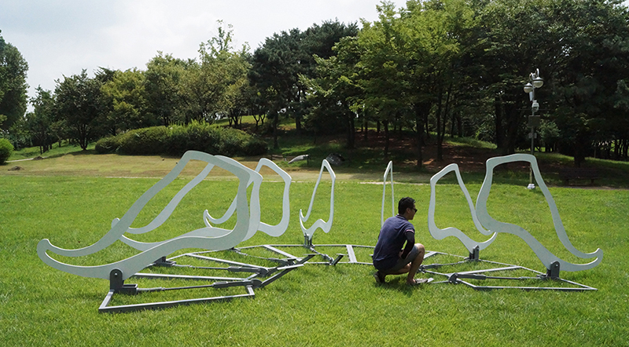
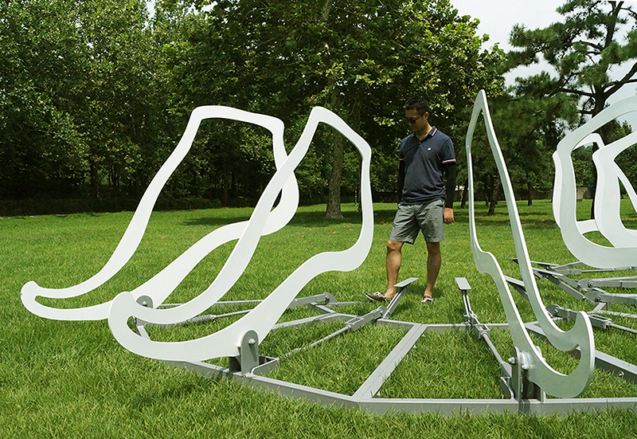

2016 August, Outdoor Kinetic Sculpture



A Journey of Footsteps represents geographical history where Yongsan has been occupied. Participants can directly interact with artwork using foot pedals. They can experience active dynamics of moving forward while connecting between past and future and human and nature.
Funding: Amore Pacific Museum
Exhibition
2016 August - September, "Make Link", Yongsan Family Park, Seoul, Korea